These photographs and design notes show how I developed and corrected the campus model.
The paper-model and illustrated studies were generated with GPT using the clay view and supplied references.
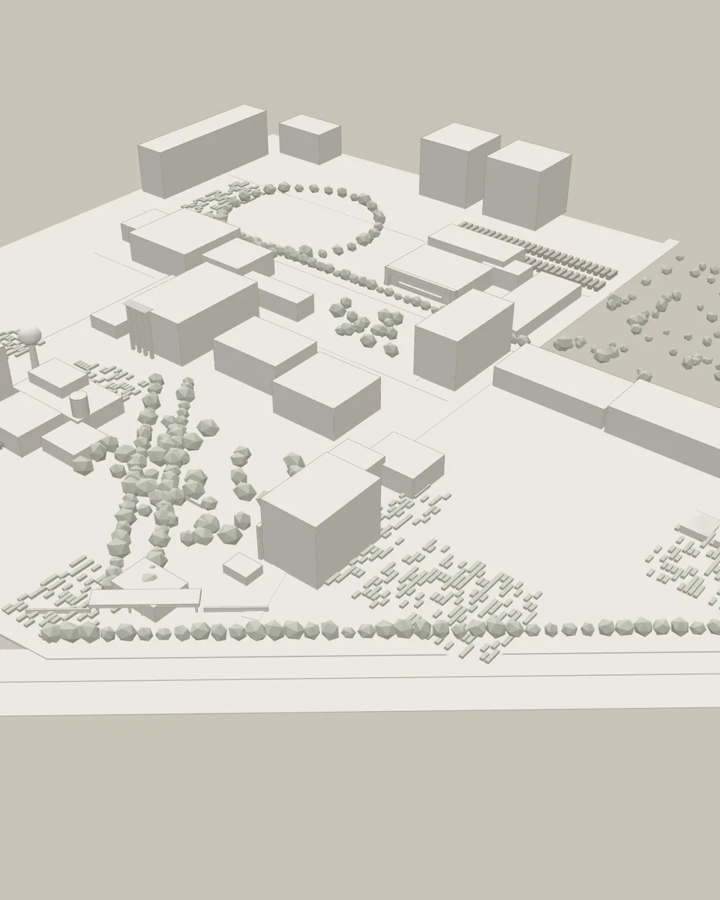
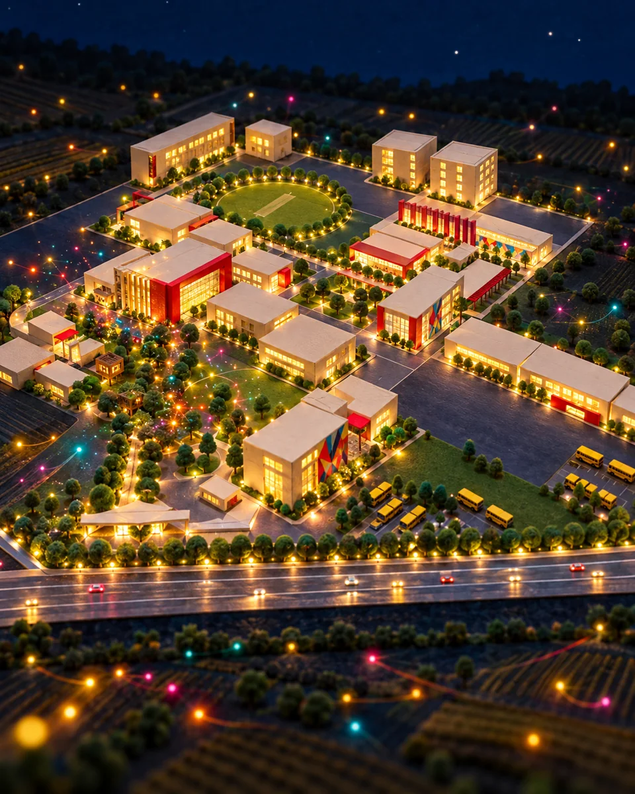
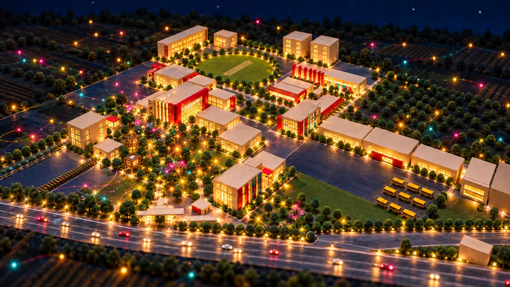
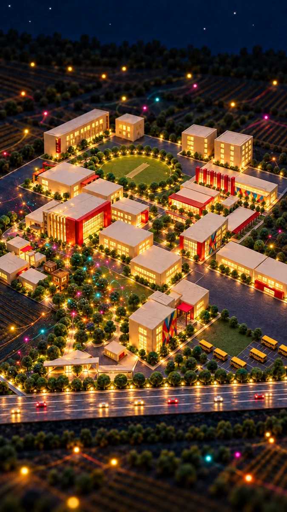
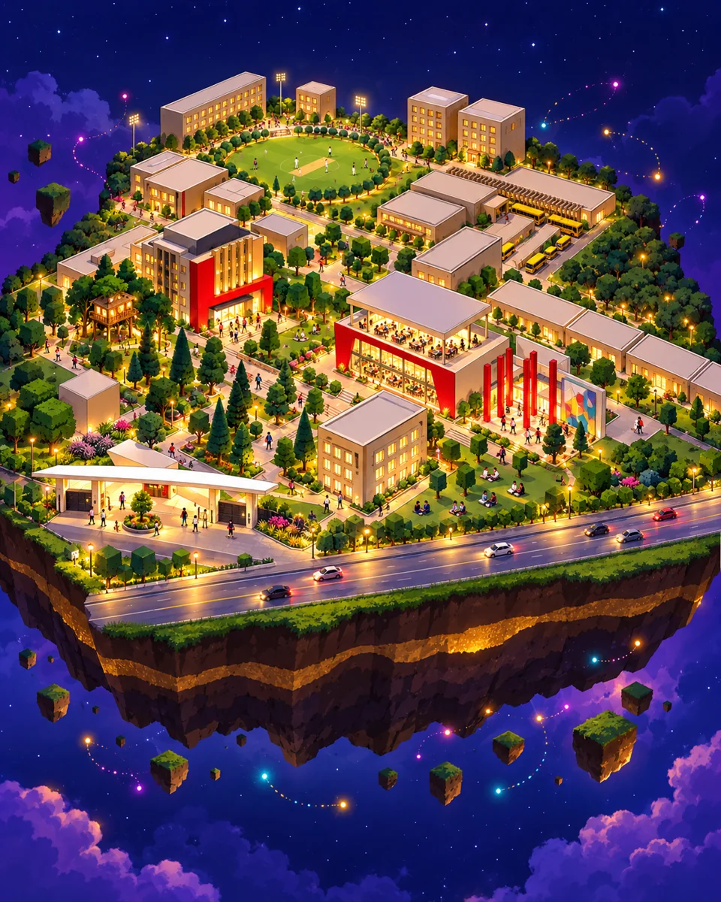
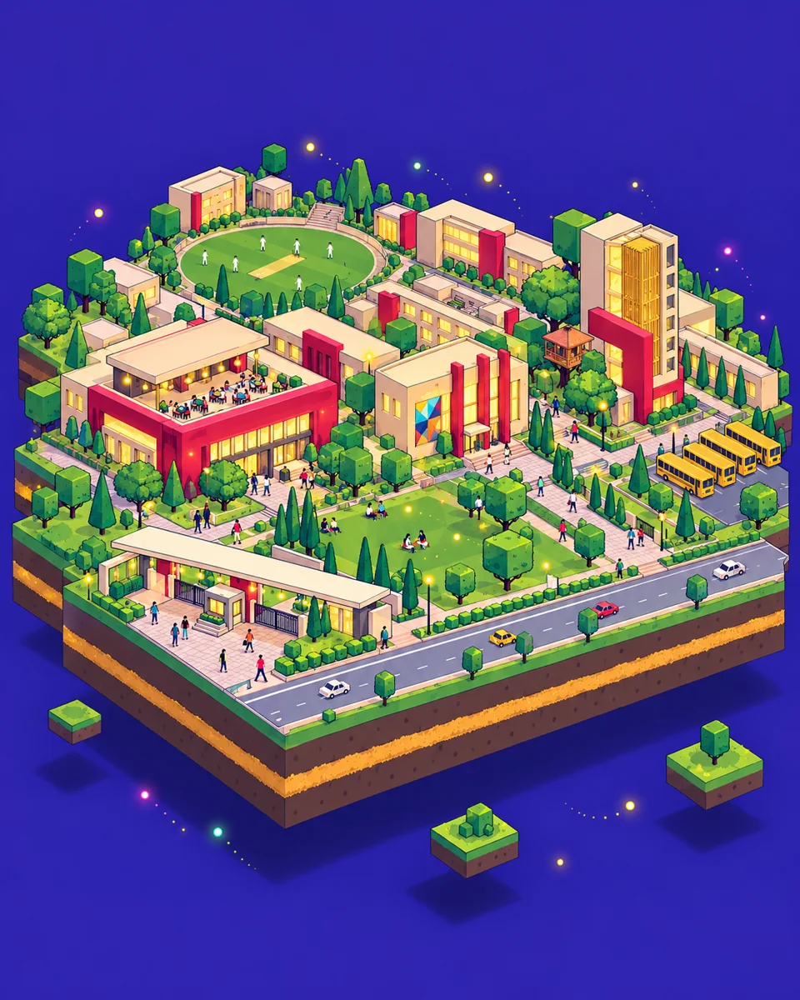
These references were supplied during development to direct the look. They are shown as references, not as my own artwork.
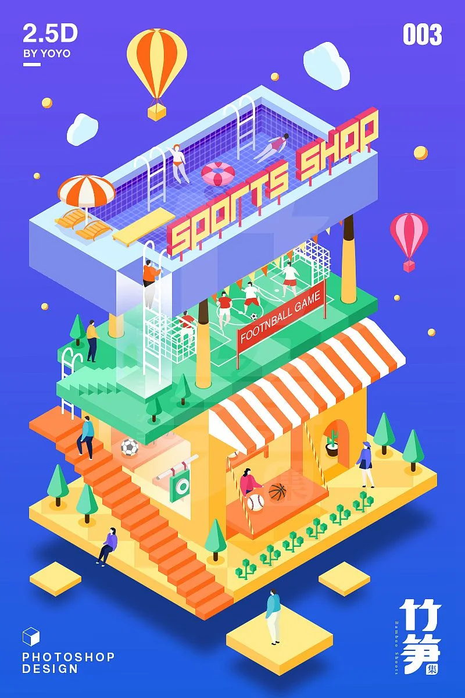
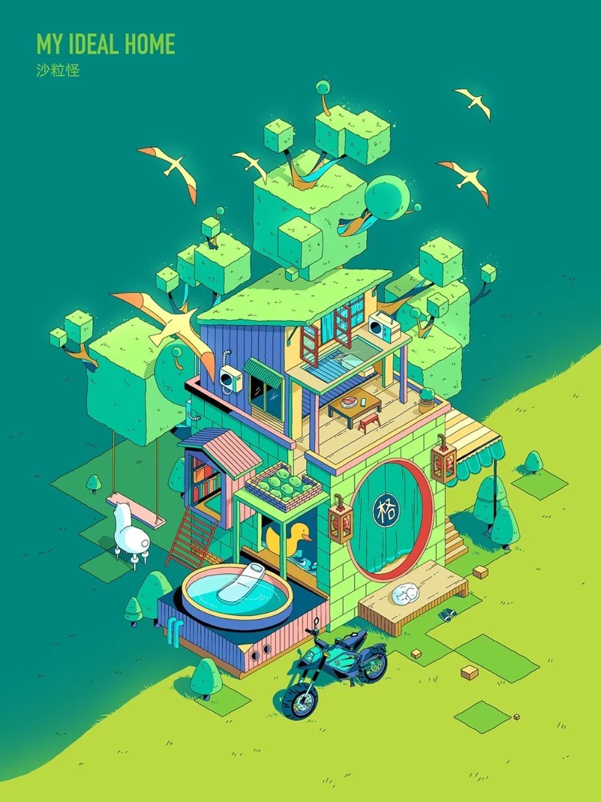
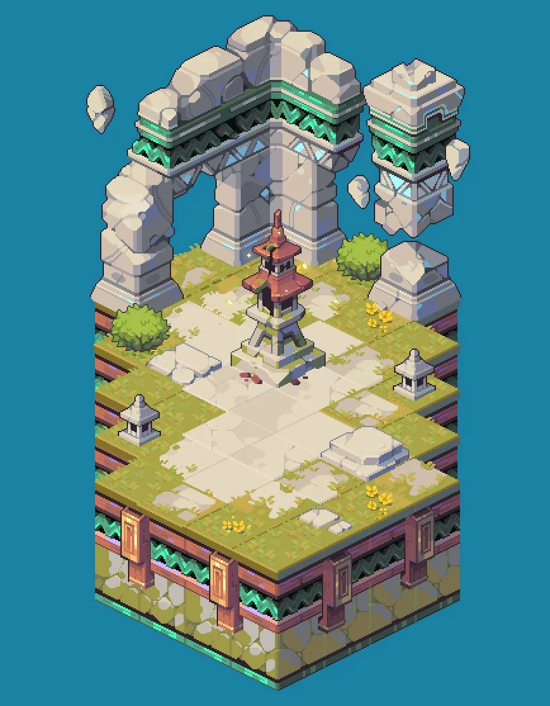
Download this prompt
Generated with the built-in image generation tool. COMMON PROMPT Use case: style-transfer. Restyle the specified clay panel from the supplied reference sheet as a handmade paper pop-up model of Chitkara University Punjab at night. Treat the chosen panel as a strict composition blueprint: preserve its exact camera angle, projection, framing, building footprints and positions, relative heights, road, parking, cricket oval and tree avenue. Only change materials, lighting and facade details. Use the photo strip solely for architecture appearance, never for camera or layout. Every building folded cream paper softly lit inside, all windows warm gold. Square One huge glossy red lacquered paper trapezoid frame around glass front. Picasso tall with gold vertical slats on top floors, red L-shaped frame and small wooden treehouse beside it. Turing four tall red pillars and colourful mural wall. Tesla red angled canopies. Main gate flat white canopy over tree-lined avenue. Babbage tall tower with mural at base. Red architectural accents glossy red lacquered paper. Deep indigo paper ground, green felt paper lawns and cricket oval, small rounded paper trees, row of tiny yellow paper buses in parking. Front-edge highway silver foil strip with tiny moving headlights. Dark farmland on all sides with coloured-pencil hatched wheat rows. Hundreds of small glowing fireflies in amber lime coral magenta cyan with soft hand-drawn light trails, concentrations over Square One and lawn before Picasso. Deep navy paper-grain night background with a few cut-paper stars. Tilt-shift macro photography, soft volumetric glow, quiet magical mood. Consistent materials and illumination across all three views. NO text, labels, logos, people, reference sheet border, collage or multiple panels. Output only the requested single image. VIEW A: Vertical 4:5. Use the left clay panel A as composition reference. VIEW B: Vertical 9:16. Use the middle clay panel B as composition reference and generated A for material and lighting continuity. VIEW C: Wide 16:9. Use the right clay panel C as composition reference and generated A for material and lighting continuity. Preserve broad campus extent, front road, rear cricket oval, avenue, foreground tower, right-side buildings and orchard.
Use case: illustration-story. Create one finished portrait 4:5 hero illustration of Chitkara University as a floating island at night. Input image is a reference sheet only: follow the campus arrangement and isometric camera of the LEFT panel A (hero 4:5), with the bottom photographs guiding recognizable architecture. Do not reproduce the reference sheet, panels, labels, or photographs. Composition: keep view A's spatial organization: oval cricket ground toward the rear left, academic buildings along rear and middle, campus blocks and landscaped pedestrian lawns in the foreground, white entrance canopy toward front left, and highway spanning the front edge. Fit the complete floating island and its thick cut slab into the frame with breathing space. Maintain the reference's connected campus layout rather than a circular fantasy village. Scene: deep indigo-violet night sky, a few small loose square tiles drifting nearby. The island is a thick slab with cut sides showing dark soil layers, golden wheat-field strips and a thin grass top. Architecture: chunky toy-like geometric cream and beige buildings. Hero buildings include a wide cafeteria with a bold red trapezoid frame, roof lifted just above it in an exploded cutaway revealing tiny students eating at tables inside; a block with exactly four tall slim red pillars and a colourful mural wall; a tall tower with gold vertical slats and a red L-shaped frame, with a small wooden treehouse beside it; and a flat white canopy entrance gate at the front. Use the bottom reference photos for the building forms, but absolutely no signage or text. Landscape and life: cube-shaped and cone-shaped trees, green oval cricket ground with tiny players, a row of chunky yellow buses, silver highway along the front edge with a few toy cars. Tiny simple students walking, sitting on lawns and carrying sketchbooks. Amber, lime, pink and cyan glowing fireflies floating around the island with dotted light trails, brightest cluster above the lawn. Style: crisp vector-look 2.5D isometric illustration, thin dark ink outlines, hard-edged flat colour shading in three clean tones per surface, warm glowing windows. Playful and detailed yet clearly readable. Deep indigo and violet night, cream/beige buildings, Chitkara red accents and warm gold light. Avoid photorealism, realistic textures, blurry painterly shading, excessive bloom, text, letters, numbers, logos, watermarks, borders, and reference sheet headings.
Create a new revised Chitkara University floating-island illustration in portrait 4:5, using the attached references. INPUT ROLES: Images 1, 2, 3 are ART STYLE REFERENCES ONLY. Image 4 is the CAMPUS LAYOUT and architecture reference: use the left panel A and the bottom building photos. Do not copy any reference text. STYLE CHANGE IS CRITICAL: emulate the graphic, illustrated isometric diorama language of the three style references: image 1's simple colourful geometric planes and toy people, image 2's neatly layered thick square tile foundation and readable isometric shapes (but do NOT use pixel art), image 3's delicate dark hand-inked outlines, cube trees, charming graphic detail and hard-edged cel shading. Smooth crisp vector-like edges. Flat limited colours, precisely three tones per surface. This must look like a drawn 2.5D editorial illustration, with large clear shapes and restrained detail, not a rendered 3D scene. No realistic lighting, texture, reflective roads, atmospheric clouds, photographic detail, or dense tiny windows. Keep ample plain indigo-violet negative space around the island. Night is expressed through the indigo-violet background, purple shadows, small flat golden windows and simple firefly halos, without cinematic lighting or extensive bloom. CONTENT: Keep view A's campus layout: oval cricket field at rear left, academic blocks along back and middle, foreground lawns and pedestrian avenues, flat white canopy entrance toward front left, silver highway along the front edge. Simplify supporting buildings so the hero architecture is prominent. Hero buildings: wide cafeteria with bold red trapezoid frame and a roof floating just above to expose tiny students eating at tables; separate cream block with exactly FOUR tall slender red pillars and colourful geometric mural; tall tower with golden vertical slats and bold red L-shaped frame, small wooden treehouse beside it. Cream and beige toy-like buildings with Chitkara red accents, warm gold window rectangles. Thin dark outlines throughout. ISLAND: clearly geometrical thick square/rectangular cut slab with straight planar sides, thin grass top, horizontal dark soil layers interleaved with golden wheat-field strips. NOT a jagged downward rocky mountain. A few small flat square tiles float nearby. LIFE: cube and cone trees; small green oval cricket ground with a few tiny players; row of chunky yellow buses; a few simple toy cars on matte silver highway. Tiny flat stylized students walking, sitting on lawns, carrying sketchbooks. Sparse amber, lime, pink and cyan fireflies with dotted trails, brightest cluster hovering above the foreground lawn. Palette: indigo, violet, cream, beige, vivid red, warm gold, jade and lime greens. Playful, uncluttered, detailed enough to explore but instantly readable. Entire island visible with margin. No words, typography, signage, letters, logos, watermark. Do not add balloons, ruins, fantasy houses, birds or objects from the style references.
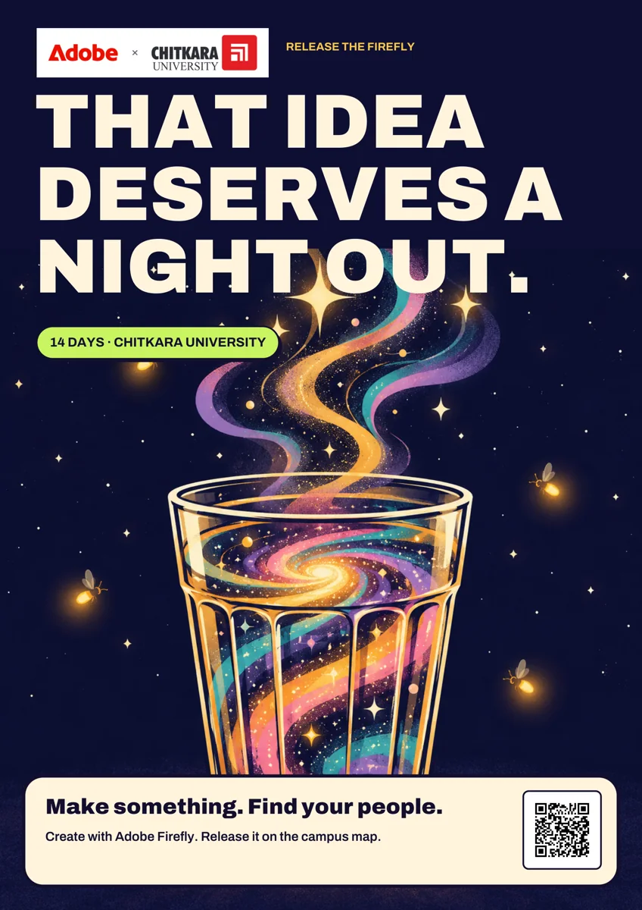
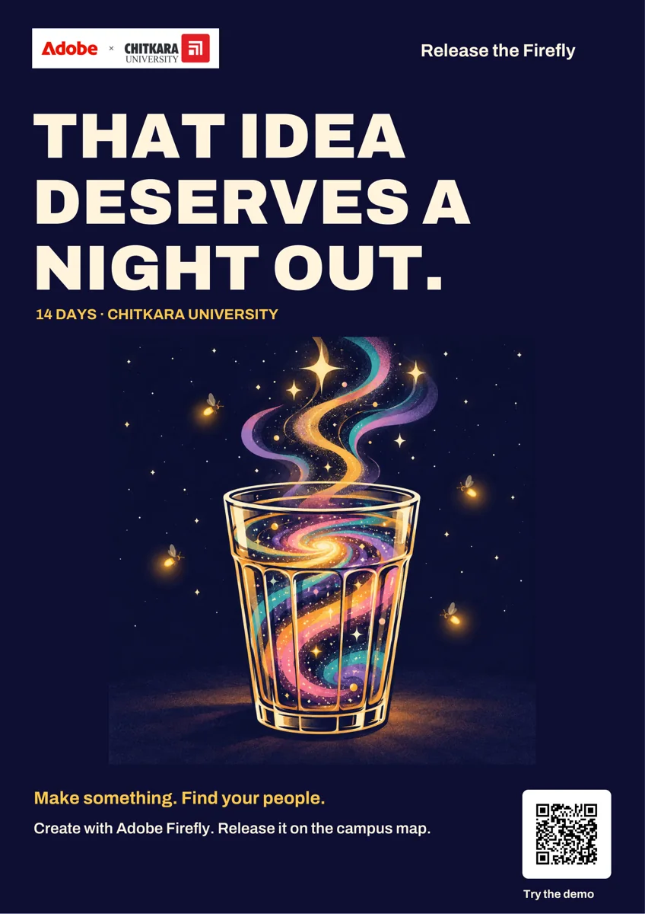
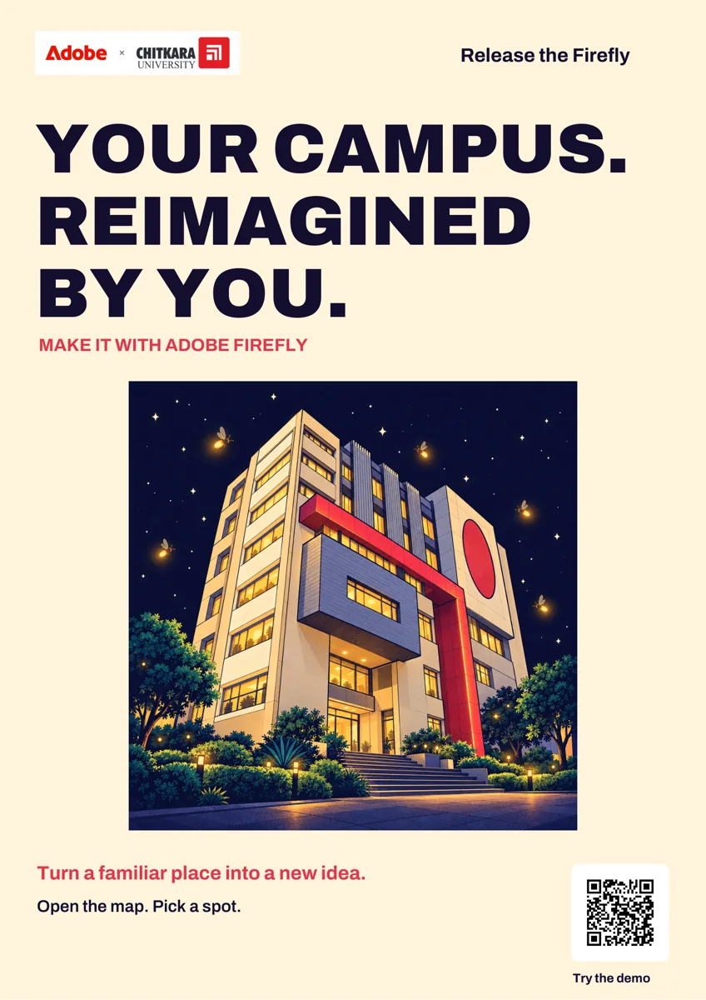
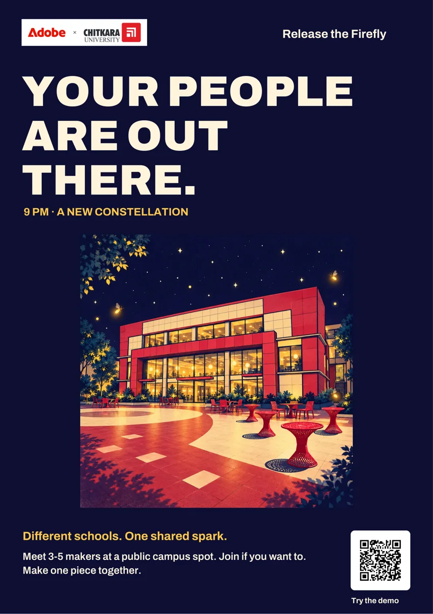
Download the three final print posters
I asked for an interactive 3D campus that students could explore on phones and laptops.
I compared the model with the campus map and asked Claude to correct the roads and their spacing.
I asked Claude to keep the red details that make the campus buildings recognisable.
I adjusted the outlines and spacing so that neighbouring objects were easier to tell apart.
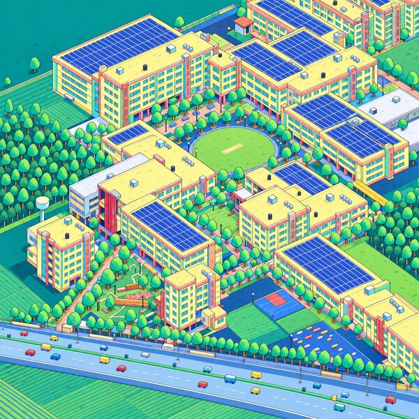
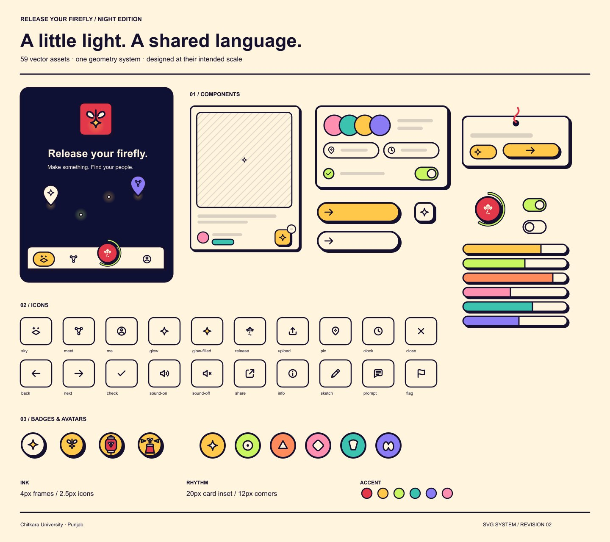
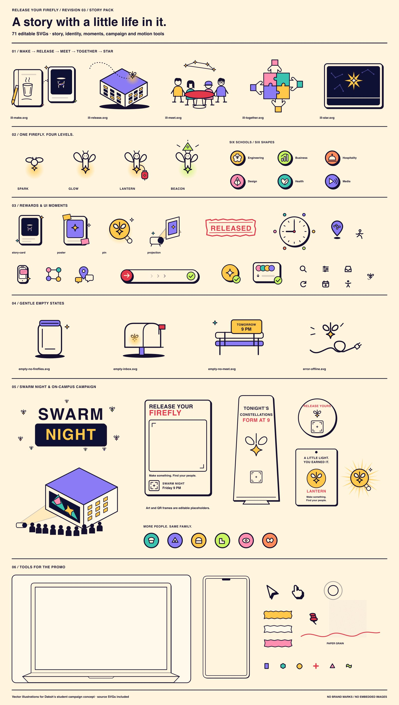
I made these four illustrations with GPT to develop the campaign’s look. I used campus photographs to check the building details.
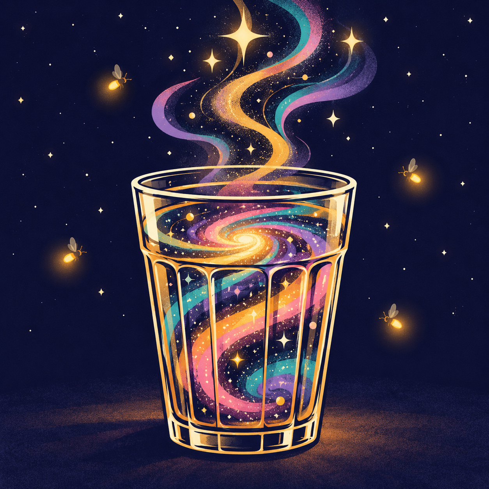
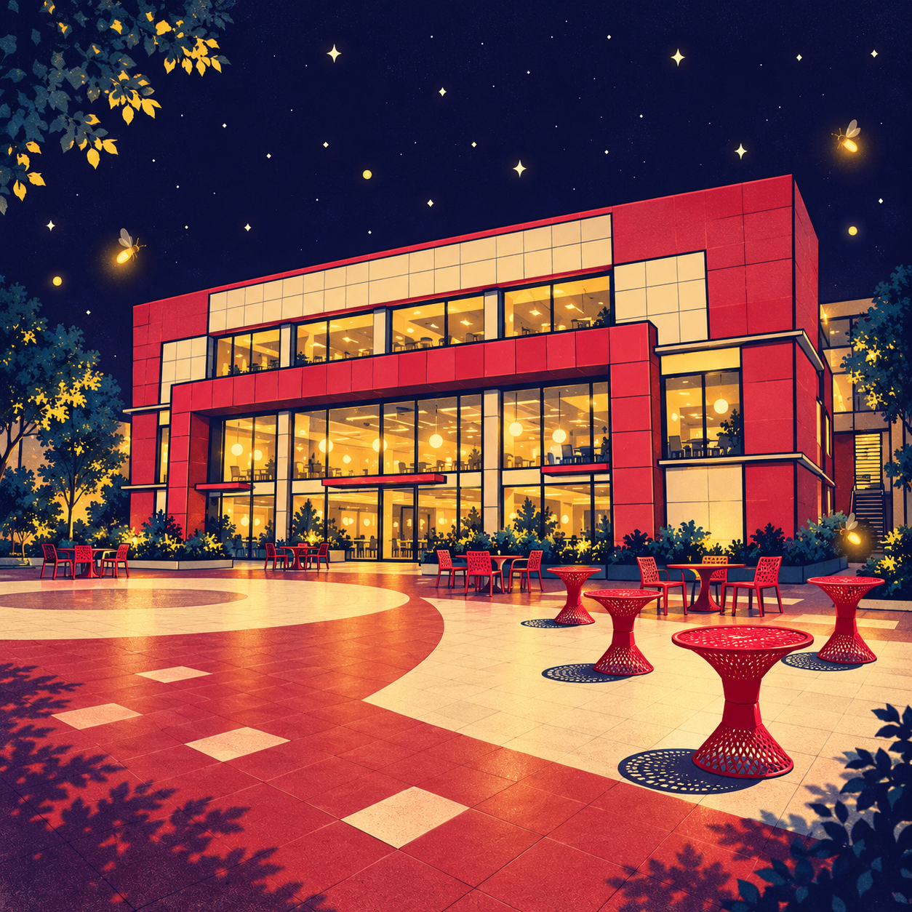
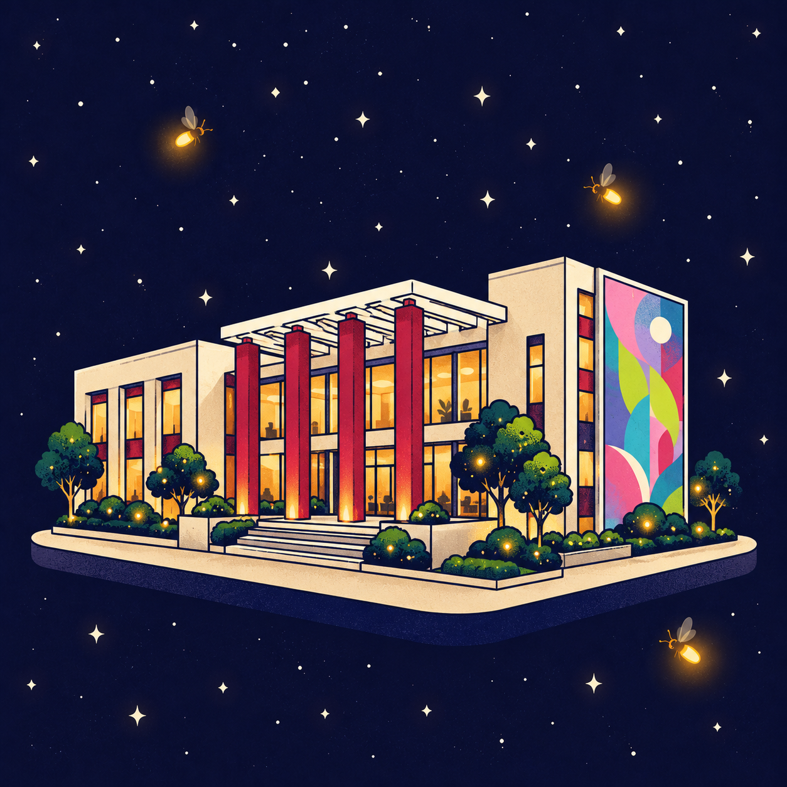
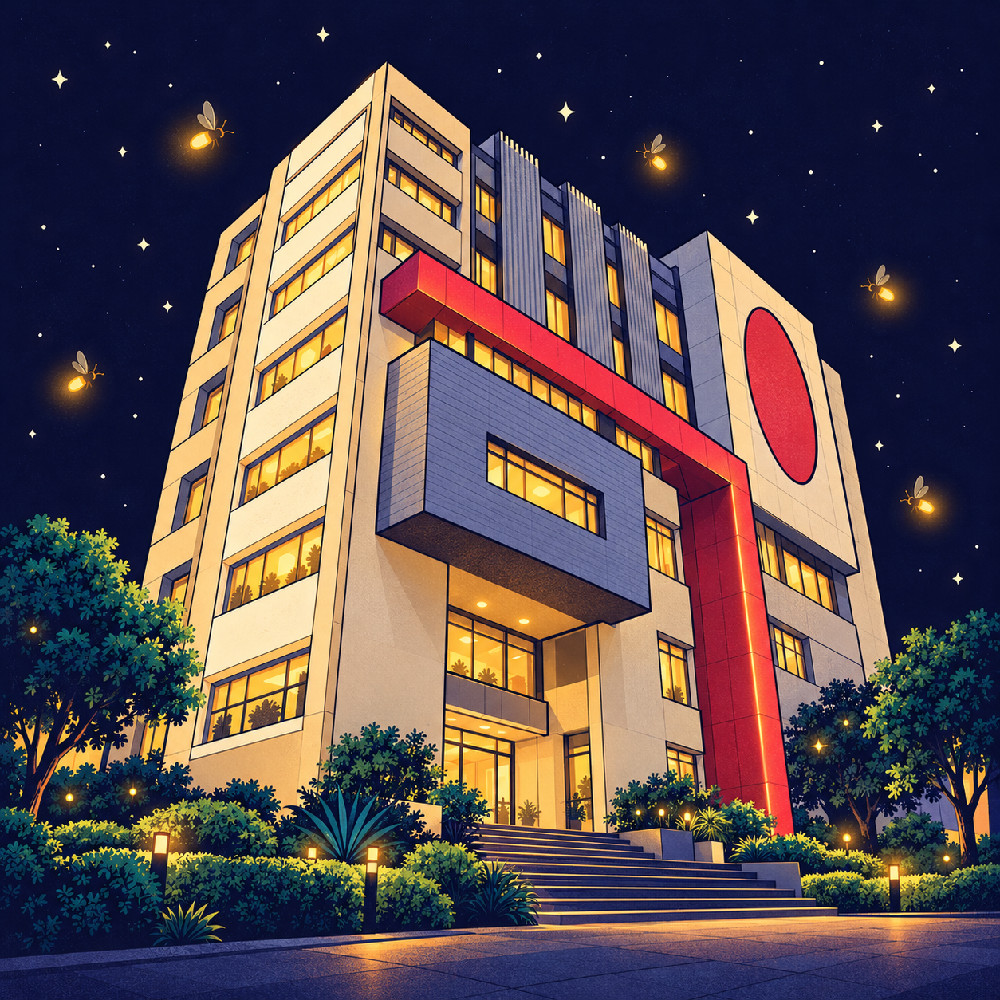
I developed the idea, photographed the campus and directed the design. Claude helped me write and refine the Three.js model. I used GPT to develop the interface assets and four concept images, and ElevenLabs for the voiceover. I published the demo on GitHub Pages. Uploads and Glows stay in each visitor’s browser; the people and meetings shown are examples.
I built the model from photographs and maps rather than a 3D scan. The reference images and early screen captures show how it developed.
Original Claude chat ↗ · Continuation ↗ · Try the demo ↗